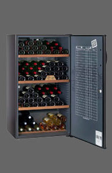

| AV 175 | Pratique, le thermomètre en façade et le nouveau registre de cave international pour tenir à la craie la gestion des bouteilles présentes. Confortable les clayettes collector reversibles à empreintes en bois massif. | |||
|---|---|---|---|---|
 |
Contenance | Système froid | Dimensions (hxlxp> | Porte |
| 178 (en 75cl) | Compresseur | 144 x 62 x 67 | Pleine | |
| Accessoires : 2 Clayetts réversibles et 1 Modulable (en option payante), Régulation électromécanique, Afficheur Digital de température | Noir | |||
| AV 205 | Astucieux, sa lampe de lecture pour les étiquettes dans un environnement obscur | |||
|---|---|---|---|---|
 |
Contenance | Système froid | Dimensions (hxlxp> | Porte |
| 196 (en 75cl) | Compresseur | 139 x 70 x68 | Pleine | |
| Accessoires : Serrure à clé, 1 Clayette coulissante (possibilité de supplémentaires e option payante), Régulation électronique, Dynamique DataDisplay | Noir | |||
Remonter au cave de vieillissement
| CV 183 | Elégante, la poignée de porte en bois profilé. | |||
|---|---|---|---|---|
|  | Contenance | Système froid | Dimensions (hxlxp> | Porte |
| 170 (en 75cl) | Compresseur | 125 x 70 x67 | Plein | |
| Accessoires : Serrure à clé, 1 Clayette bois option | Brun foncé | |||
Bientôt de nouvelles caves disponibles...
© SFCV - Mentions légales
L'abus d'alcool est dangereux pour la santé, à consommer avec modération